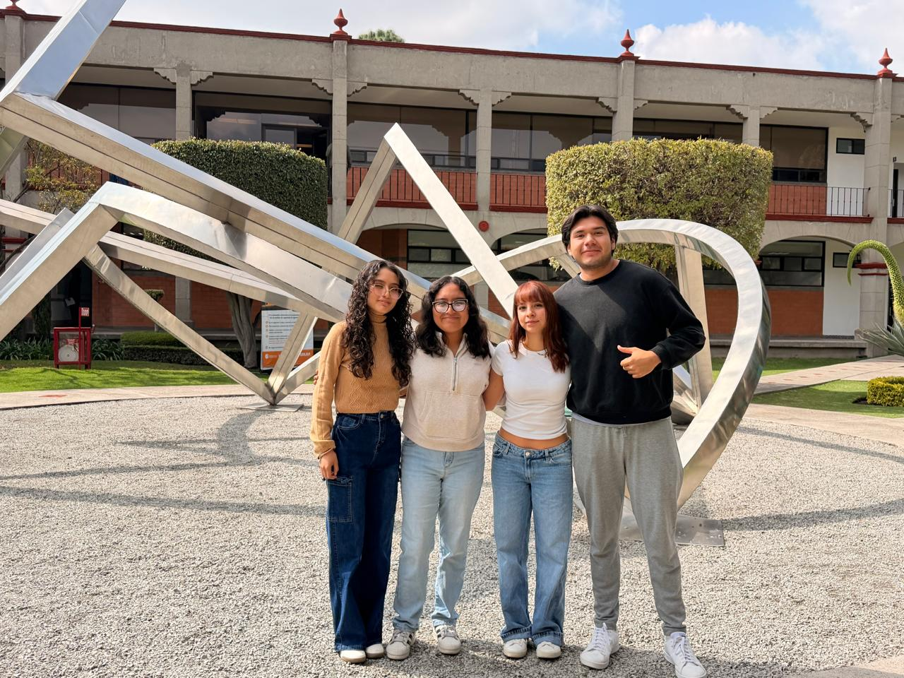

Proyecto de Investigación
Equipo 4 • Sección 18
Estudiantes a cargo de la formulación, recolección, síntesis e integración del documento formal de investigación.

Equipo 4 - Cultura Digital (Sección 18)
Universidad de las Américas Puebla (UDLAP)
Cultura Digital
Docente: Mtra. Dulce Karina Trejo Tlapa
Institución: Universidad de las Américas Puebla (UDLAP)
Periodo: Semestre Otoño 2026
Marco de Trabajo: Agenda 2030 - ODS 8 (Meta 8.5)
Diego Salvador Huerta Sánchez
Ingeniería Civil
ID: 193989
Daniela González Cuellar
Estrategias Financieras y Contaduría Pública
ID: 194224
Ariadna Lizeth Ostos Sánchez
Ingeniería Mecatrónica
ID: 194540
Ximena Rojas Ramírez
Biología
ID: 191394
Contexto y Delimitación del Problema
La transición entre la educación superior y el mercado laboral constituye una etapa crítica en el desarrollo personal y socioeconómico de los jóvenes universitarios. En el contexto del Objetivo de Desarrollo Sostenible 8 (ODS 8) de la ONU, la Meta 8.5 promueve el empleo pleno, productivo y el trabajo decente para todas las personas, incluidos los jóvenes, así como la igualdad de remuneración por trabajo de igual valor.
En el mercado laboral mexicano, la obtención de un título universitario tradicionalmente se ha percibido como una garantía de movilidad social y altos ingresos. No obstante, indicadores oficiales como la ENOE (INEGI) y la Encuesta Nacional de Egresados (UVM) demuestran que la oferta de profesionales supera la disponibilidad de plazas con sueldos proporcionales al nivel educativo, generando el fenómeno conocido como "choque de expectativas".
Delimitación del Estudio
Población
Jóvenes egresados de educación superior en México.
Fenómeno Analizado
El desfase entre las expectativas salariales iniciales y las remuneraciones reales del mercado laboral.
Alcance Temporal y Geográfico
Indicadores y estudios nacionales recientes sobre inserción laboral en México (periodo 2008–2026).
Exclusiones
No se evalúan programas de empleo en educación técnica básica ni dinámicas laborales exclusivas de otros países, salvo para fines comparativos.
Pregunta Central de Investigación
Objetivo General
Analizar la influencia de las expectativas salariales de los egresados universitarios frente a las remuneraciones y condiciones reales ofrecidas por el mercado laboral en México, en el marco de la Meta 8.5 del ODS 8.
Identificar las principales brechas entre los ingresos esperados por los estudiantes universitarios y las primas salariales reales al momento de su incorporación laboral.
Evaluar el impacto de la experiencia laboral previa y la adquisición de competencias técnicas especializadas sobre la empleabilidad y la negociación salarial.
Explicar las implicaciones de la sobreeducación y la rigidez salarial estructural en la consecución del trabajo decente para los jóvenes en México.
Estrategia Sistemática
Metodología de Búsqueda y Selección
Recuperación de evidencia científica garantizando trazabilidad y rigor académico.
Bases y Metabuscadores
Búsquedas cruzadas en el catálogo de Biblioteca UDLAP (Primo exlibris), Google Académico, SciELO, ProQuest, JSTOR y Wiley.
Estrategia Booleana
Construcción de cadenas mediante sintaxis normalizada de tesauro:
Criterios e Inclusión
- Artículos de investigación indexados y revisados por pares.
- Informes oficiales de la ENOE (INEGI), ENE (UVM), OCDE y ONU.
- Delimitación temporal y temática directa sobre empleabilidad juvenil.
Revisión Sistemática
Estado del Arte
Comparativa de coincidencias, matices y áreas de oportunidad en la literatura científica.
Consenso en la Literatura Consultada
Las fuentes coinciden en que la obtención de un título universitario ya no asegura de forma automática un sueldo alto o una contratación inmediata acorde a la formación recibida.
Concuerdan en que los estudiantes de grado tienden a sobreestimar de forma sistemática el valor monetario inicial de su educación universitaria.
Confirman que el mercado laboral mexicano padece rigidez salarial y sobreeducación, situando las ofertas de entrada por debajo de las aspiraciones iniciales.
Evidencia Empírica
Principales Hallazgos e Interpretación
Resultados sintéticos derivados de las plantillas de recuperación y análisis formal.
Sobreestimación Monetaria
Las expectativas salariales de los estudiantes universitarios a menudo sobreestiman el valor inicial de su educación en comparación con las ofertas vigentes en el mercado de trabajo.
Desbalance Oferta vs. Vacantes
En el contexto de México, la oferta de profesionistas calificados supera la cantidad de plazas disponibles que ofrecen salarios proporcionales a la preparación académica.
Demanda de Habilidades Técnicas
Las primas salariales y la empleabilidad de los graduados están fuertemente condicionadas por la demanda de competencias especializadas más allá de poseer únicamente el título.
Interpretación Sistemática de los Resultados
Los resultados demuestran que el desempleo juvenil y el descontento salarial no corresponden a una mera percepción subjetiva de las nuevas generaciones, sino a un problema estructural del sistema: lo que la universidad enseña y lo que el mercado laboral recompensa no están alineados.
Para alcanzar la Meta 8.5 del ODS 8 (garantizar trabajo decente, productivo y sueldos justos), es indispensable acortar la brecha entre las competencias especializadas que demandan las empresas y la oferta de los planes universitarios en México.
Discusión y Respuesta a la Pregunta
En respuesta a nuestra pregunta inicial, se concluye que las expectativas salariales de los egresados influyen de manera directa en su inserción laboral al actuar como un filtro que determina la aceptación o rechazo de las ofertas iniciales.
Respuesta a la Pregunta
El choque entre lo esperado y lo ofrecido eleva la frustración inicial y retarda la inserción laboral plena en empleos formales.
Cumplimiento de Objetivos
Se demostró que las primas salariales no dependen exclusivamente del grado académico, sino de la experiencia práctica y el dominio técnico.
Implicaciones para la Meta 8.5 de la ONU
"Lograr el empleo pleno y productivo y el trabajo decente para todos los hombres y mujeres, incluidos los jóvenes, y la igualdad de remuneración por trabajo de igual valor."
Una transición escuela-trabajo exitosa requiere un esfuerzo articulado: las universidades deben actualizar sus planes de estudio orientándolos a competencias aplicadas, mientras que el sector público y privado debe ofrecer estructuras salariales justas que reconozcan el esfuerzo académico.
Fuentes Académicas
Referencias Bibliográficas (APA 7)
Literatura científica, informes gubernamentales e institucionales validados en la investigación.
-
Burgos Flores, B. (2008).
Sobreeducación y desfase de conocimientos en el mercado laboral de profesionistas. Revista de la Educación Superior, 37(148), 57-68.
-
Centro de Opinión Pública UVM. (2023).
Encuesta Nacional de Egresados 2023. Universidad del Valle de México. https://opinionpublica.uvm.mx/...
-
Espinal Betanzo, J. A. (2024).
Formación dual a nivel técnico: efectos en la transición escuela-trabajo. Estudios Sociológicos, 42, e2636. https://doi.org/10.24201/es.2024v42.e2636
-
García Viña, J. (2020).
La situación del empleo de los jóvenes y una propuesta de políticas públicas para afrontar el desempleo juvenil. Revista Latinoamericana de Derecho Social, (30), 65-94.
-
Instituto Nacional de Estadística y Geografía. (2022).
Encuesta Nacional de Ocupación y Empleo (ENOE). INEGI. https://www.inegi.org.mx/programas/enoe/15ymas/
-
Organisation for Economic Co-operation and Development. (2019).
Educación superior en México: Resultados y relevancia para el mercado laboral. OECD Publishing. https://doi.org/10.1787/9789264309432-es
-
Organización de las Naciones Unidas. (s. f.).
Objetivo 8: Promover el crecimiento económico inclusivo y sostenible, el empleo y el trabajo decente para todos. ONU. https://www.un.org/sustainabledevelopment/es/economic-growth/
-
Reissova, A., & Simsova, J. (2019).
The value of education in the labour market. How realistic are student expectations? Business and Economic Horizons, 15(1), 20-36. https://doi.org/10.15208/beh.2019.2
-
Rubio Ugalde, G. J., Razo Zamora, L. A., & Loredo Castillo, L. A. (2022).
Impacto de Jóvenes Construyendo el Futuro y desempleo juvenil de México. Política y Cultura, (57), 109-134.
-
Solís, P. (2012).
Desigualdad social y transición de la escuela al trabajo en la Ciudad de México. Estudios Sociológicos, 30(90), 641-680.
-
Taylor, D. (2007).
Employment Preferences and Salary Expectations of Students in Science and Engineering. Bioscience, 57(2), 175-185. https://doi.org/10.1641/B570212
-
Wu, Q., Cheng, X., Wang, W., & Wang, C. (2025).
Employment Skills Demand and Skill Premiums: What Engineering Graduates Does the Market Require? European Journal of Education, 60(3). https://doi.org/10.1111/ejed.70195
Declaración de Uso Ético de Inteligencia Artificial
Manual 3 ChatGPT • Cultura Digital UDLAP
Prompts y Contexto
Se utilizaron prompts estructurados (Manual 3) para resumir los archivos académicos, diseñar la arquitectura de información y prototipar el sitio web.
Criterio Humano
La IA funcionó como herramienta de apoyo técnico; el Equipo 4 validó la veracidad de datos, redactó las conclusiones y verificó la traza documental.
Sin Invención de Datos
Toda la información proviene exclusivamente de los documentos formales aprobados (Prácticas 1 a 10). No se inventaron fuentes ni citas estadísticas.